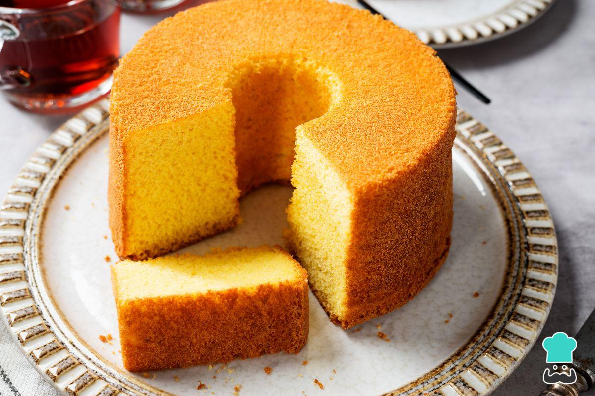
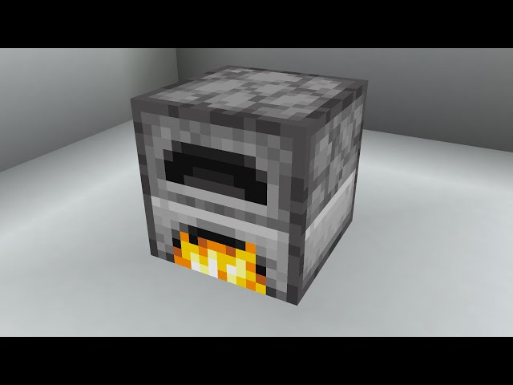
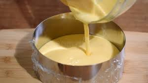
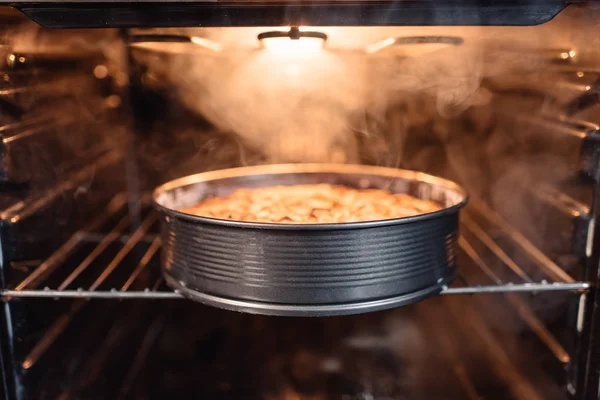

Precalentar el horno a 180°C

En un bowl, batir los huevos con el azúcar hasta que la mezcla esté más clara y espumosa.
Agregar la manteca derretida (o aceite), la leche y la vainilla. Mezclar bien.
En otro recipiente, mezclar harina, polvo de hornear y sal.
Incorporar los ingredientes secos poco a poco a la mezcla líquida, mezclando suavemente.
Verter la mezcla en un molde enmantecado y enharinado.

Hornear entre 35 y 40 minutos.

Pinchar con un palillo: si sale limpio, el queque está listo